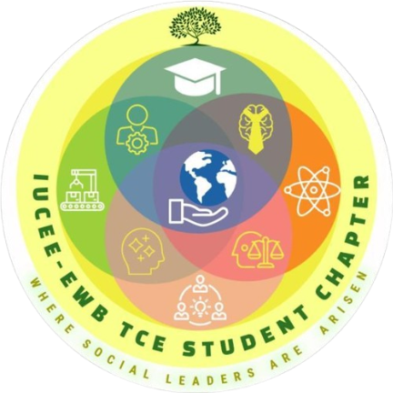

Observe
Look around and identify a meaningful sustainability practice.

IUCEE EWB TCE Student Chapter presents
nunnokku
Look closer. Notice better.
Everyday sustainability often goes unnoticed. Nunnokku is an invitation to pause, observe, and recognise the small choices around us that make a difference.
Share what you noticedNunnokku is a weekly sustainability observation initiative where students identify and document meaningful sustainable practices they encounter in their everyday surroundings.
Look around and identify a meaningful sustainability practice.
Take an original photograph of what you observed.
Explain why the observation matters and how it can inspire others.
Think beyond these examples. If you notice something meaningful, tell us about it.
Find a sustainability-related practice around you.
Take a clear original photograph.
Prepare a short reflection of approximately 100–150 words.
Upload your photograph and write-up through the submission form.
Selected observations will be featured weekly on the chapter's LinkedIn page.
In your write-up, cover:
Keep it authentic. We are looking for real observations from everyday life, not textbook explanations.
Also add your name, year, department, and register/roll number at the end of your write-up, so we can credit and reach you if selected.
Have you noticed something worth appreciating? Capture it, reflect on it, and share it with us.
Every week, one selected observation will be featured through the IUCEE EWB TCE Student Chapter's LinkedIn page.
Follow our LinkedIn